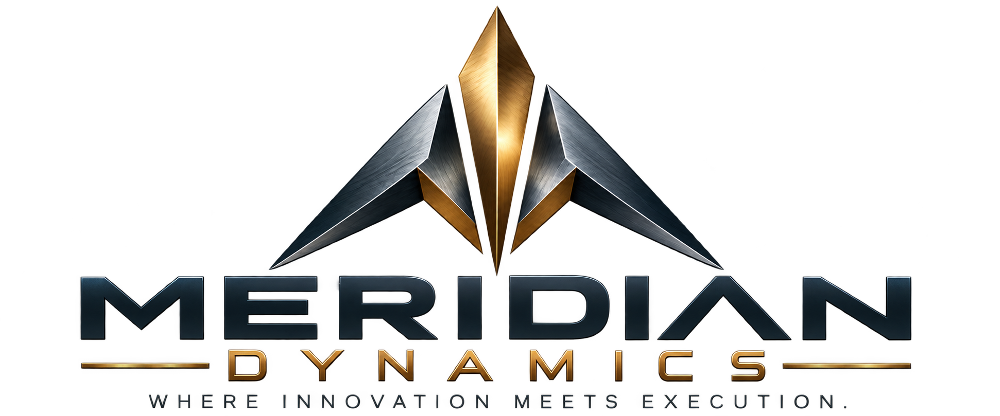

Custom Software & Automation
Purpose-built applications, workflow automation, and tools that eliminate repetitive tasks and manual handoffs.
MANUFACTURING • TECHNOLOGY • TRANSFORMATION
Custom software, practical automation, and data-driven solutions that help manufacturers solve complex problems and get work done.

WHAT WE DO
Not software for software's sake. Tools and processes designed around the people doing the work.
Purpose-built applications, workflow automation, and tools that eliminate repetitive tasks and manual handoffs.
Database solutions, reporting pipelines, and actionable dashboards that turn scattered information into useful insight.
Practical analysis and process redesign to improve throughput, traceability, quality, and operational visibility.
Connecting existing tools and information so teams spend less time chasing data and more time creating value.
PROVEN EXPERIENCE
Practical solutions backed by decades of hands-on manufacturing, technology, and process improvement experience.
WORKFLOW AUTOMATION
Labor Hours Eliminated
Automated a repetitive manufacturing documentation process, reducing manual effort and improving consistency.
MANUFACTURING PRODUCTIVITY
Increase in Programming Output
Improved team workflows, priorities, and execution to substantially increase manufacturing programming throughput.
PROCESS IMPROVEMENT
Estimated Annual Labor Savings
Developed a manufacturing kitting solution designed to reduce wasted effort and streamline production support.
Examples reflect the founder's professional experience prior to establishing Meridian Dynamics.
OUR APPROACH
Great solutions begin with understanding how work actually happens—not just how a process is documented.
Meridian Dynamics combines hands-on manufacturing experience with software development and analytical thinking to deliver solutions that fit your operation.
Let's solve something together ↗BUILT ON EXPERIENCE
Meridian Dynamics is an independent consultancy focused on the intersection of manufacturing operations, software, and continuous improvement. We bring a practical, shop-floor-aware perspective to technology challenges.
LET'S CONNECT
Tell us what is slowing your operation down. We'll start with a conversation.
contact@meridiandynamicsmd.com ↗